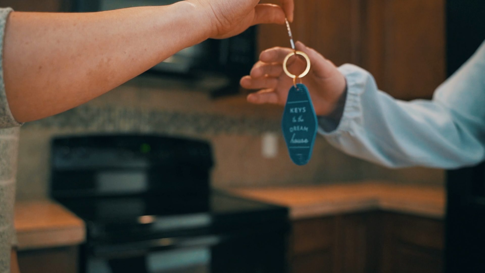
01broll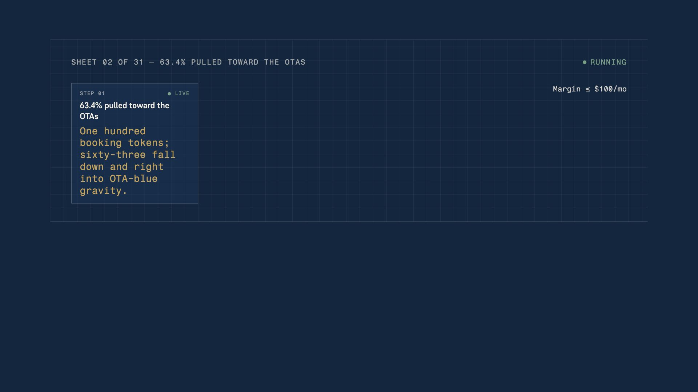
02schematic00:05–00:137.6s
63.4% pulled toward the OTAs
Voiceover
Cloudbeds reports 63.4 percent of independent reservations arrive through OTAs.
Visual job
One hundred booking tokens; sixty-three fall down and right into OTA-blue gravity.
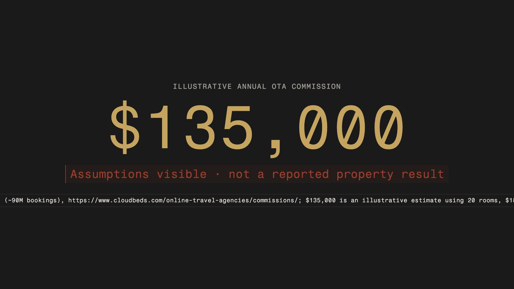
03proof card00:13–00:196.4s
$135K annual commission exposure
Voiceover
At an illustrative twenty-room hotel, commission can reach $135,000 a year.
Visual job
20 rooms · $180 ADR · 70% occupancy · 63.4% OTA · illustrative estimate
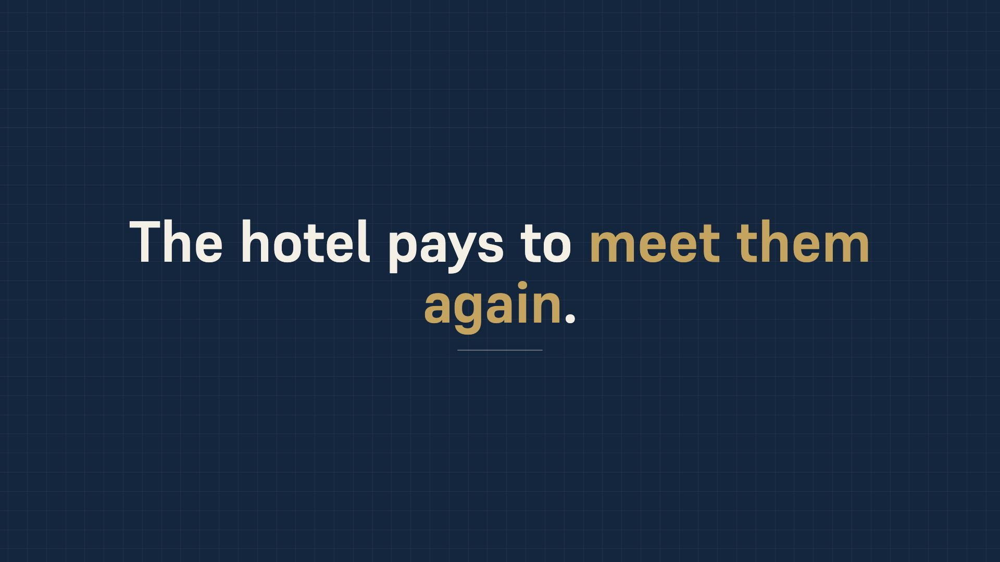
04quote00:19–00:244.4s
The larger loss is the relationship.
Voiceover
My estimate. The larger loss is the relationship.
Visual job
MY ESTIMATE · THE HUMAN CONSEQUENCE
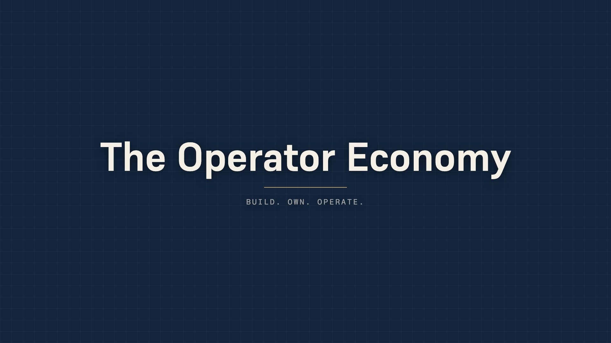
logo · 2.4s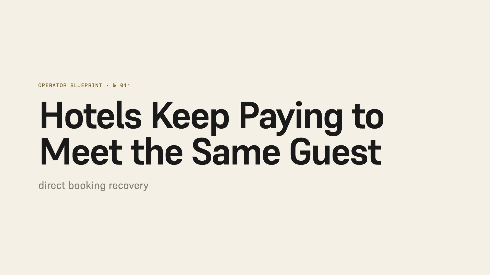
title · 1.6s00:24–00:284.0s overlay
Logo sting → episode title
Voiceover beneath ident
This is The Operator Economy. This week: direct
Visual job
Reset after the cold open, establish the series, then name the episode without breaking narration momentum.
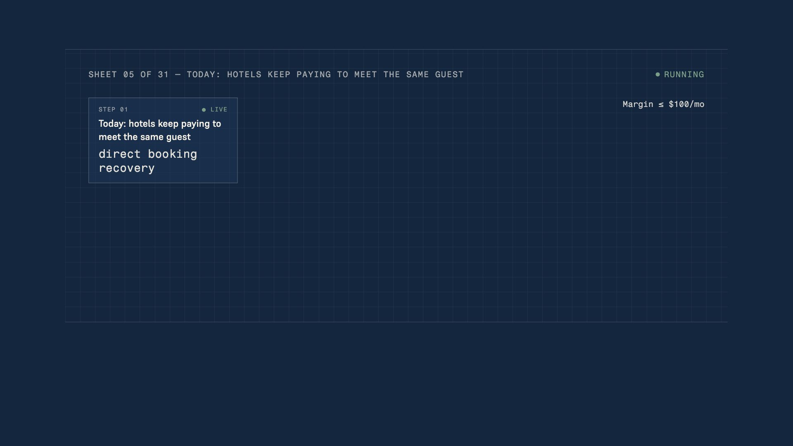
05schematic00:24–00:4622.8s
Turn discovery into a return relationship
Voiceover
This is The Operator Economy. This week: direct booking recovery. Not replacing Booking.com or Expedia. Building the system that turns a discovered guest into a returning guest the property can reach directly. The first booking may come through an online travel agency. The outcome is that the second one does not have to.
Visual job
direct booking recovery · returning guest · the second one
06proof card
00:46–01:0922.4s
Six fragments. One operator outcome.
Voiceover
For a ten-to-forty-room property, that system is rarely one person's job. It is scattered across the website, the phone, the booking engine, the guest list, the Google profile, and the follow-up nobody had time to send. Direct booking is not a website feature. It is the result of all those pieces behaving like one operation.
Visual job
ten-to-forty-room · nobody had time · one operation
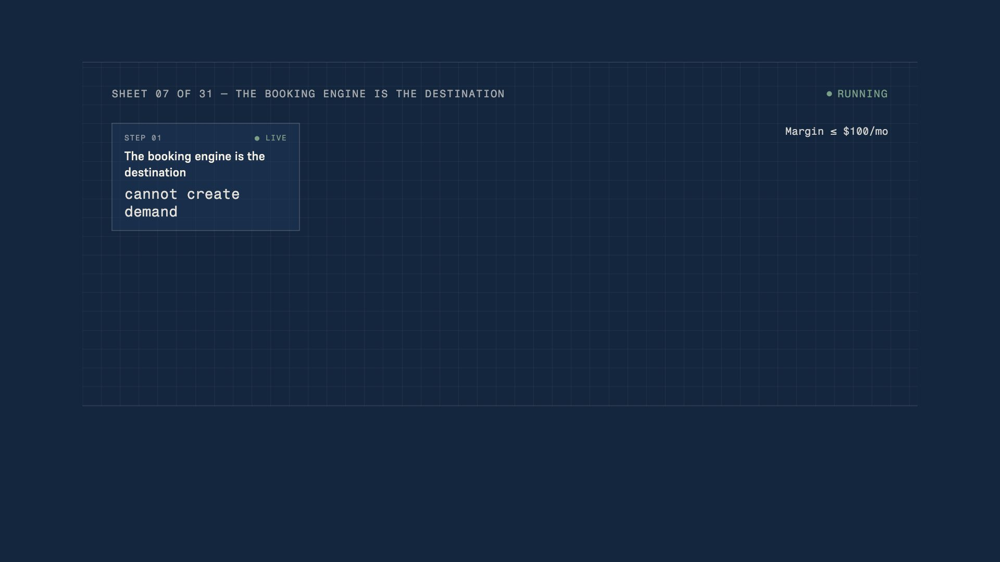
07schematic01:09–01:3425.3s
The booking engine is the destination
Voiceover
That distinction matters because a booking engine cannot create demand. It can only catch demand that reaches it. The operator opportunity is to run the path around the engine: keep the property findable, make the destination credible, recover the guests it already served, and prove whether more of them return direct. One outcome, supported by several tools.
Visual job
cannot create demand · return direct · One outcome
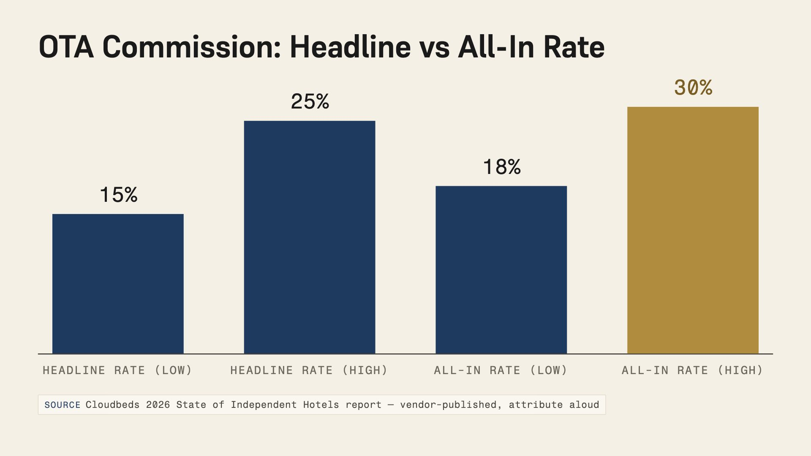
08chart01:34–02:0328.5s
63.4% of independent reservations arrive through OTAs
Voiceover
Start with the gravity. Cloudbeds, who sell hotel software, analyzed roughly ninety million bookings for its 2026 State of Independent Hotels report. The company reports that independent hotels receive 63.4 percent of reservations through online travel agencies. That is a large dataset, but it is still vendor-published, so keep the attribution attached to the number.
Visual job
roughly ninety million · 63.4 percent · vendor-published
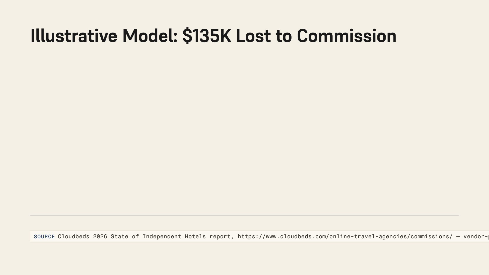
09chart02:03–02:3027.8s
Visibility can push commission to 30%
Voiceover
The headline commission is only the beginning. Cloudbeds reports that Booking.com can reach an all-in 18 to 30 percent when programs such as Genius and Visibility Booster are included. Expedia can reach 17 to 23 percent with Accelerator. The platform is not hiding the exchange: it supplies reach and conversion, and the property pays for both.
Visual job
18 to 30 percent · 17 to 23 percent · reach and conversion
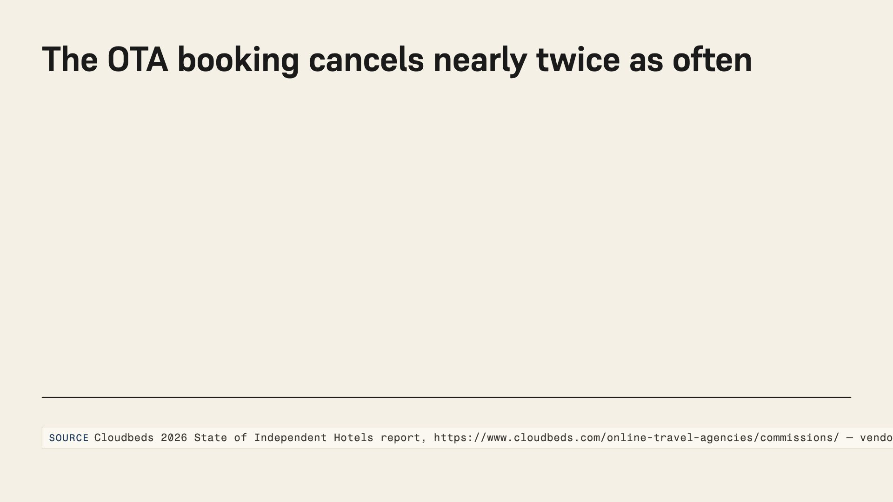
10chart02:30–02:5626.1s
The OTA booking cancels nearly twice as often
Voiceover
The same report puts the OTA cancellation rate at 21.8 percent, compared with 10.6 percent for direct bookings. In this dataset, the commission buys a booking that is roughly twice as likely to disappear. That does not make the OTA useless. It makes the operator's dependence on it more expensive than the rate alone suggests.
Visual job
21.8 percent · 10.6 percent · more expensive
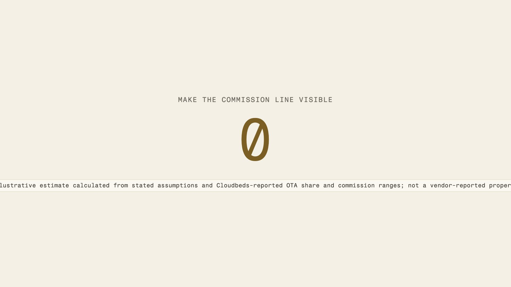
11proof card02:56–03:3134.5s
Make the commission line visible
Voiceover
Now make the cost concrete, without pretending one model represents every property. Twenty rooms at a $180 average daily rate and 70 percent occupancy produces about $920,000 in annual room revenue. Apply 63.4 percent OTA share and a 22 percent commission, and the estimate is roughly $128,000. At a 23 percent commission, it is about $134,000. The point is the order of magnitude, not a universal invoice.
Visual job
$920,000 · the estimate · not a universal invoice
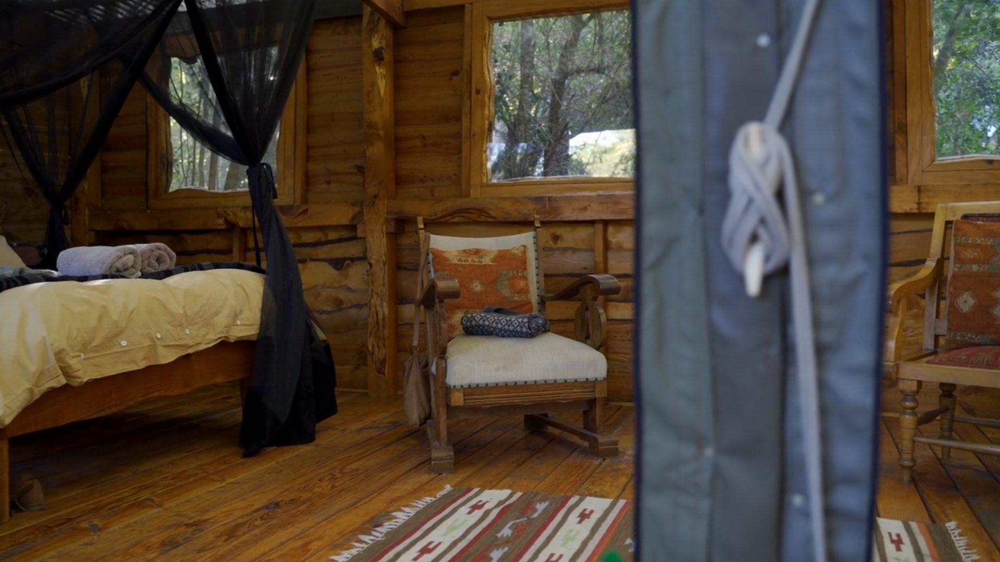
12broll03:31–03:5726.4s
OTA dependence is rational
Voiceover
And leaning on those platforms is not negligence. A small property gets global discovery, translated listings, paid acquisition, comparison shopping, and a transaction layer it could not reproduce alone. The real failure happens after the stay, when the property has no permissioned guest record, no useful follow-up, and no reason for the guest to remember the direct path.
Visual job
not negligence · after the stay · direct path
quaint rustic hotel bed and breakfast inn bedroom fireplace13broll
03:57–04:2325.3s
The missing product is operating capacity
Voiceover
At Coqui Coqui, the brand and website were only the beginning. The harder work was making social, the site, the call, the booking, and check-in feel like one continued conversation. I could do that with a team of more than fifty people across the operation. A small innkeeper does not have that headcount. The missing product is operating capacity.
Visual job
one continued conversation · more than fifty people · operating capacity
tropical boutique hotel resort guests walking palm courtyard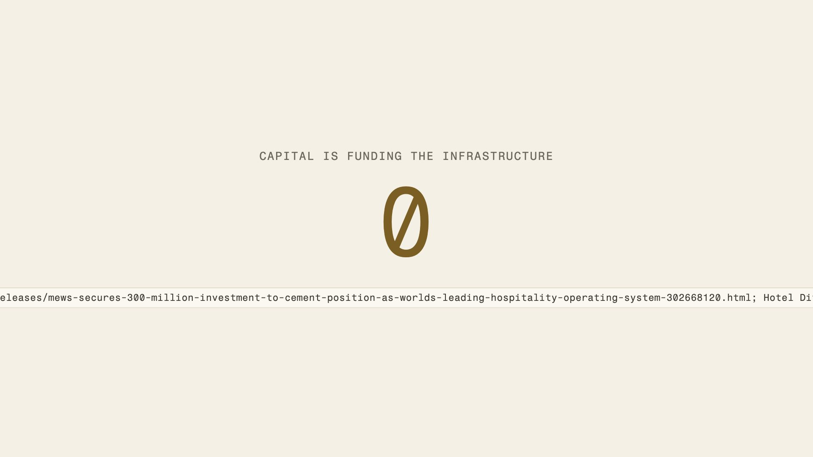
14proof card04:23–04:5633.3s
Capital is funding the infrastructure
Voiceover
The high end confirms that the infrastructure matters. Mews announced a $300 million Series D in January 2026 at a $2.5 billion valuation, and said the capital would support AI-driven hotel operations. That is company-reported market evidence, not proof that a small operator will succeed. It does show where substantial capital expects hotel operations to move. But infrastructure still does not install itself.
Visual job
$300 million · $2.5 billion · company-reported
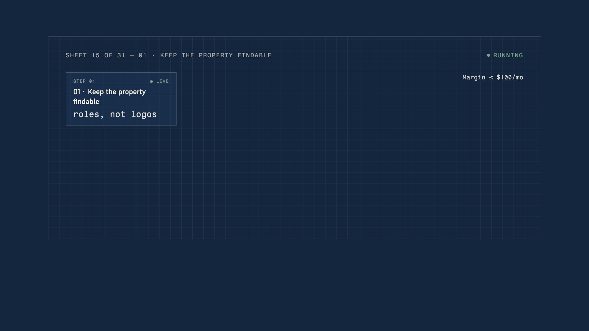
15schematic04:56–05:2327.6s
01 · Keep the property findable
Voiceover
The counter-system starts with roles, not logos. The discovery keeper maintains the places where intent already exists: the Google Business Profile, current photography, descriptions, offers, and the property's own search result. Its job is not to spray content. Its job is to make sure a guest who searches for the property finds a current and credible destination.
Visual job
roles, not logos · discovery keeper · credible destination
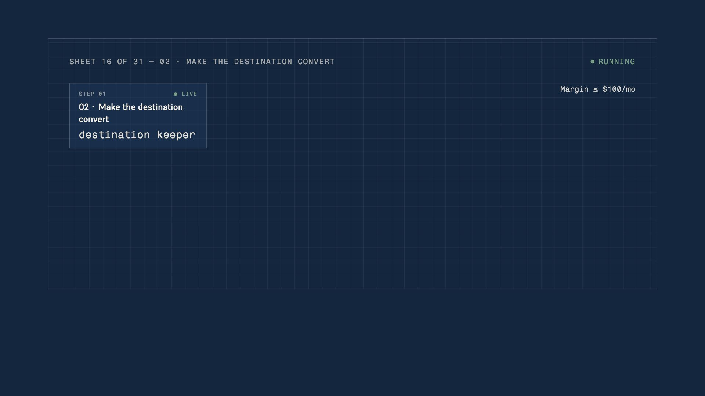
16schematic05:23–05:5127.9s
02 · Make the destination convert
Voiceover
The destination keeper owns the handoff from interest to reservation. That means rate parity, mobile booking friction, availability, cancellation language, and the phone call the front desk could not take. Mews, Cloudbeds, SiteMinder, or Little Hotelier may supply the booking plumbing. Twilio and a voice agent may recover the call. The role is the constant; the tools can change.
Visual job
destination keeper · booking plumbing · tools can change
17schematic
05:51–06:2028.4s
03 · Remember the guest with permission
Voiceover
The relationship keeper begins after checkout. With permission, it records the stay, sends a useful thank-you, asks for a review at the right moment, and creates a relevant reason to return. Resend or another email layer can deliver the message. Make or n8n can trigger the sequence. Automation handles continuity; the operator still decides what hospitality sounds like.
Visual job
relationship keeper · With permission · operator still decides
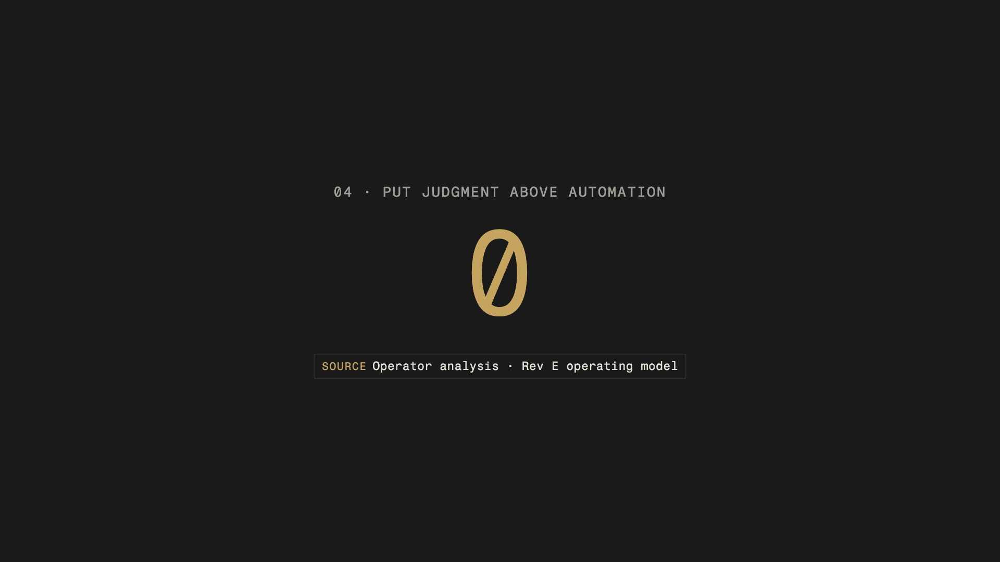
18proof card06:20–06:4726.8s
04 · Put judgment above automation
Voiceover
Then the operator sits above the exceptions. They approve voice and offers, inspect anything sensitive, and decide when the system should stop. A model can draft. An automation can route. Neither can own the commercial judgment or the guest relationship. That responsibility is what makes this an operated service instead of a bundle of subscriptions.
Visual job
above the exceptions · commercial judgment · operated service
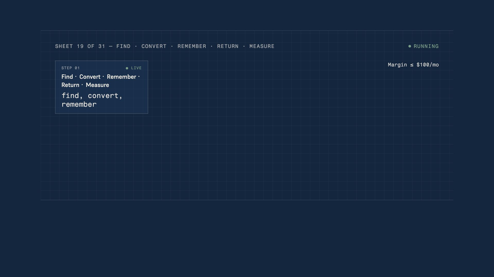
19schematic06:47–07:1326.2s
Find · Convert · Remember · Return · Measure
Voiceover
Put the roles together and the stack becomes simple enough to explain in one line: find, convert, remember, return, measure. Tool logos belong beneath those outcomes, never in place of them. The booking engine is the destination. The service is the operating system that keeps sending the right guest toward it and learns whether the mix changed.
Visual job
find, convert, remember · beneath those outcomes · mix changed
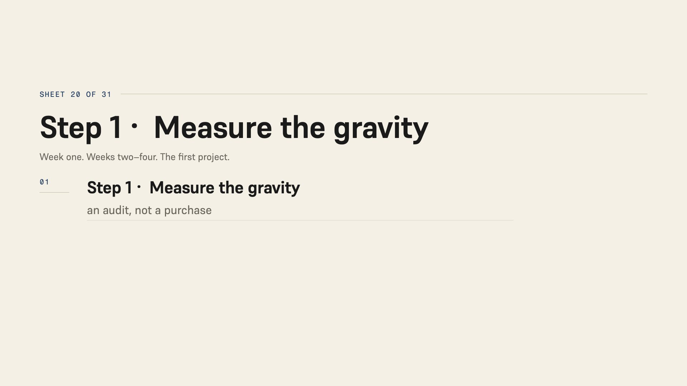
20sheet07:13–07:3825.3s
Step 1 · Measure the gravity
Voiceover
Installation begins with an audit, not a purchase. Pull the property's booking mix, commission, cancellations, missed calls, website conversion, repeat stays, and referral bookings. If the operator cannot establish a before state, nobody can later prove the system recovered anything. The first deliverable is a map of where the guest relationship currently falls away.
Visual job
an audit, not a purchase · before state · falls away
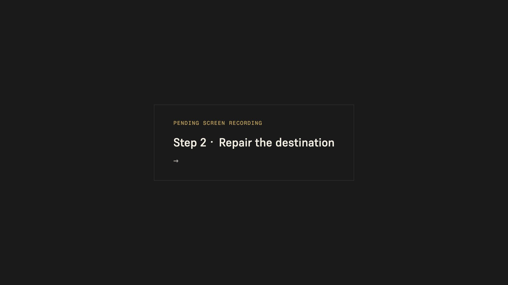
21screen rec07:38–08:0223.9s
Step 2 · Repair the destination
Voiceover
Next, repair the destination. Search the property on a phone. Compare the direct rate with the OTA rate. Try to book the room. Read the cancellation terms. Call after the desk is busy. The direct path must be trustworthy before outreach sends anyone into it. Otherwise the system pays to expose the same broken handoff faster.
Visual job
repair the destination · Try to book · broken handoff
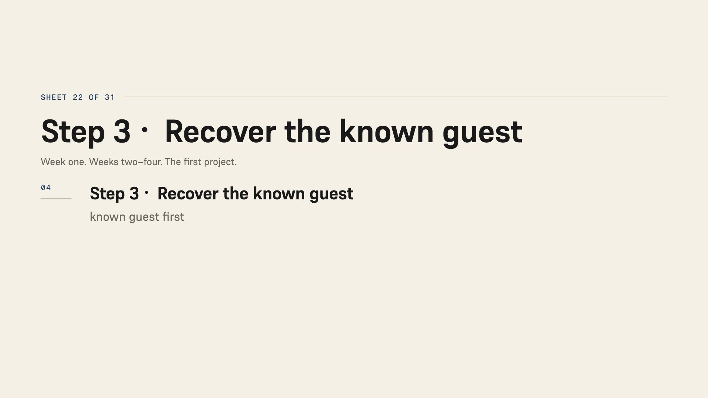
22sheet08:02–08:2422.0s
Step 3 · Recover the known guest
Voiceover
Then recover the known guest first. Start with people the property has already served and has permission to contact. Build the post-stay thank-you, the review request, a seasonal reason to return, and a referral prompt. Do not disguise cold automation as hospitality. Relevance and restraint are part of the product.
Visual job
known guest first · permission to contact · Relevance and restraint
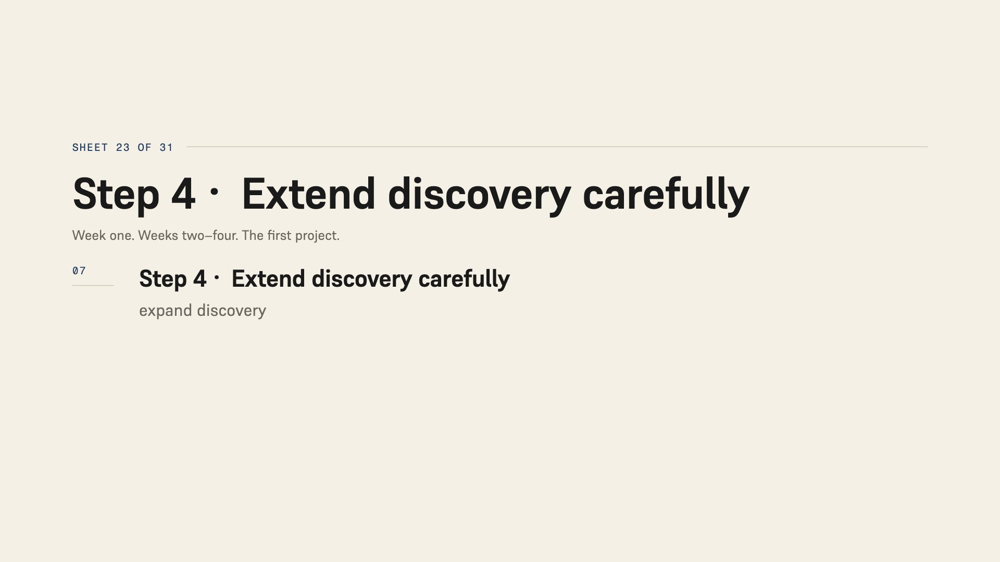
23sheet08:24–08:5631.6s
Step 4 · Extend discovery carefully
Voiceover
Only then expand discovery work. Keep the profile current. Publish the real property, not generic destination content. Prompt satisfied guests for specific reviews. Build referral partnerships that match the stay. Every activity should connect to the same direct destination, and every automated message should have an owner who reads the output. The blueprint linked below turns this sequence into a working audit and installation checklist.
Visual job
expand discovery · the real property · an owner
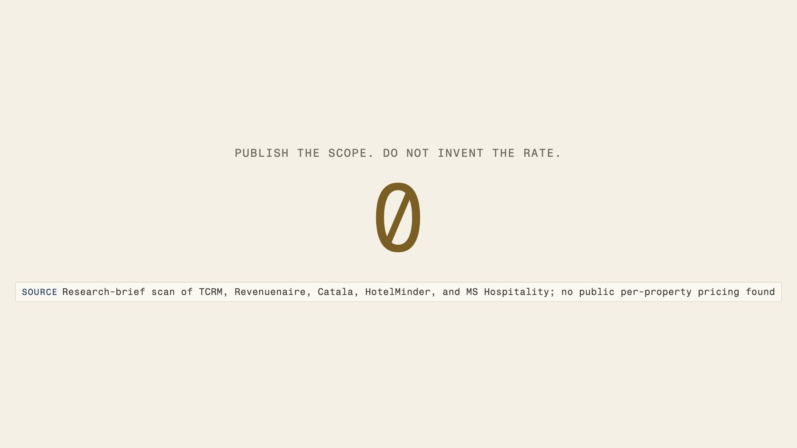
24proof card08:56–09:1923.0s
Publish the scope. Do not invent the rate.
Voiceover
The providers reviewed for this episode quote privately. That absence of public pricing is a finding, but not permission to invent a market rate. Publish a clear scope and a pricing method. Show what is installed, what is operated each month, what requires the hotel, and which outcome will be reported. Clarity is the wedge.
Visual job
quote privately · not permission to invent · Clarity is the wedge
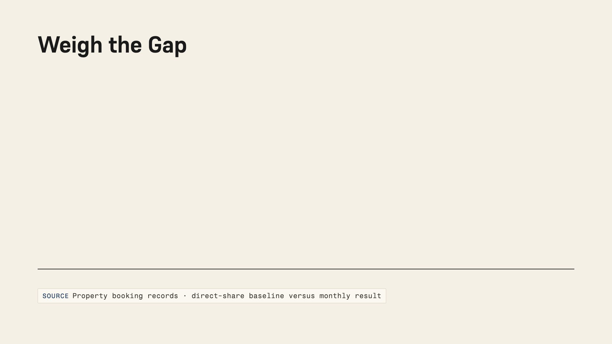
25chart09:19–09:4526.6s
Step 5 · Report direct share
Voiceover
Report one operator outcome every month: direct share of bookings, before and after. Commission, cancellation, missed calls, website conversion, repeat stays, and reviews explain why the number moved. But a dashboard full of activity cannot replace the result. If direct share does not improve, the system needs a diagnosis, not a prettier report.
Visual job
one operator outcome · direct share · needs a diagnosis
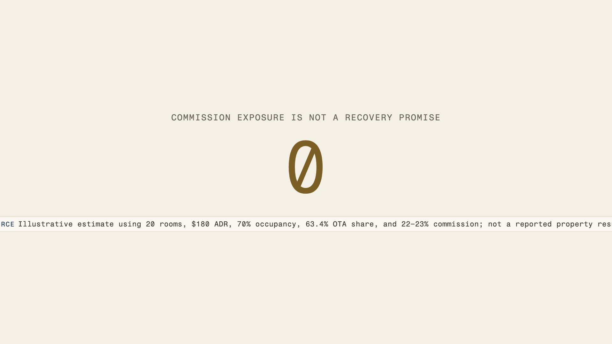
26proof card09:45–10:1024.8s
Commission exposure is not a recovery promise
Voiceover
The economics begin with the property's commission line, not a promise about the operator's income. In the illustrative twenty-room model, my estimate of annual OTA commission is on the order of $128,000 to $134,000 under the stated assumptions. That gives the hotel a real cost to compare against. It does not prove how much any intervention will recover.
Visual job
not a promise · $128,000 to $134,000 · does not prove
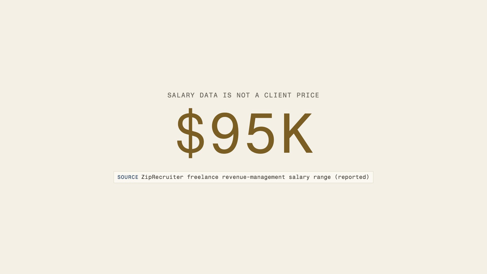
27proof card10:10–10:3828.4s
Salary data is not a client price
Voiceover
The low-end labor evidence is thinner. ZipRecruiter's reported salary data shows a $94,500 to $140,000 range for full-time-equivalent freelance remote hotel revenue-management work. That is salary data, not a client price, and it is not evidence of what one person will earn from this offer. It only confirms that the operational work has recognized labor value.
Visual job
evidence is thinner · salary data · not a client price
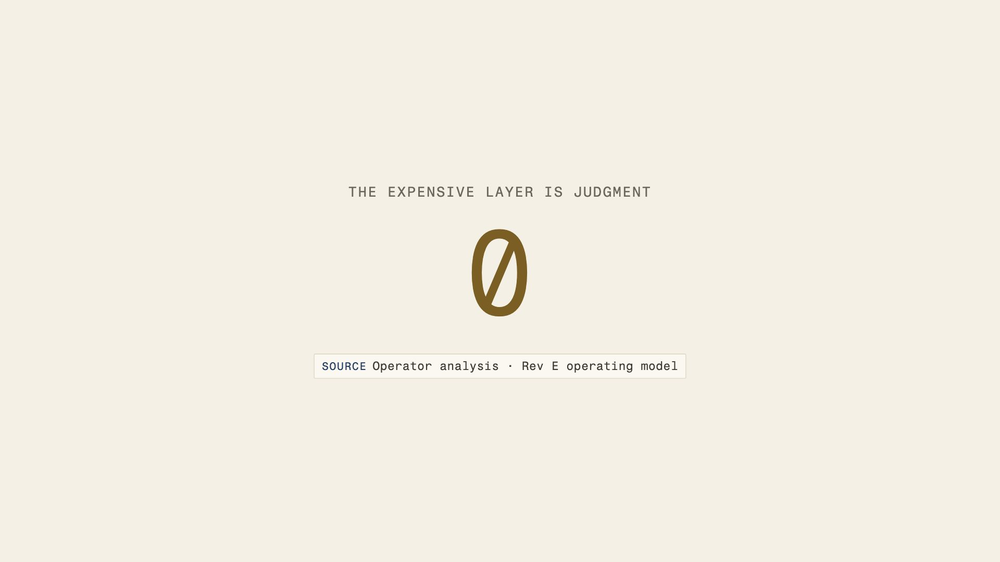
28proof card10:38–11:0223.7s
The expensive layer is judgment
Voiceover
The real cost is not only software. It is the time to direct the agents, inspect their output, correct the property's voice, manage consent, resolve exceptions, and explain the result to the owner. Underprice that judgment and the service becomes an unpaid support desk. Automate it blindly and it stops feeling like hospitality.
Visual job
not only software · Underprice that judgment · feeling like hospitality
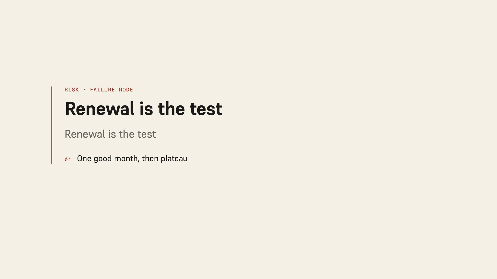
29risk card11:02–11:2926.6s
Renewal is the test
Voiceover
Renewal is the test. A hotel may see one strong month for reasons the service did not cause. Seasonality may move the number. An OTA promotion may distort the mix. The operator has to preserve the baseline, state what changed, and remain careful about causation. A service that cannot prove its contribution will eventually be treated as another subscription.
Visual job
Renewal is the test · careful about causation · another subscription
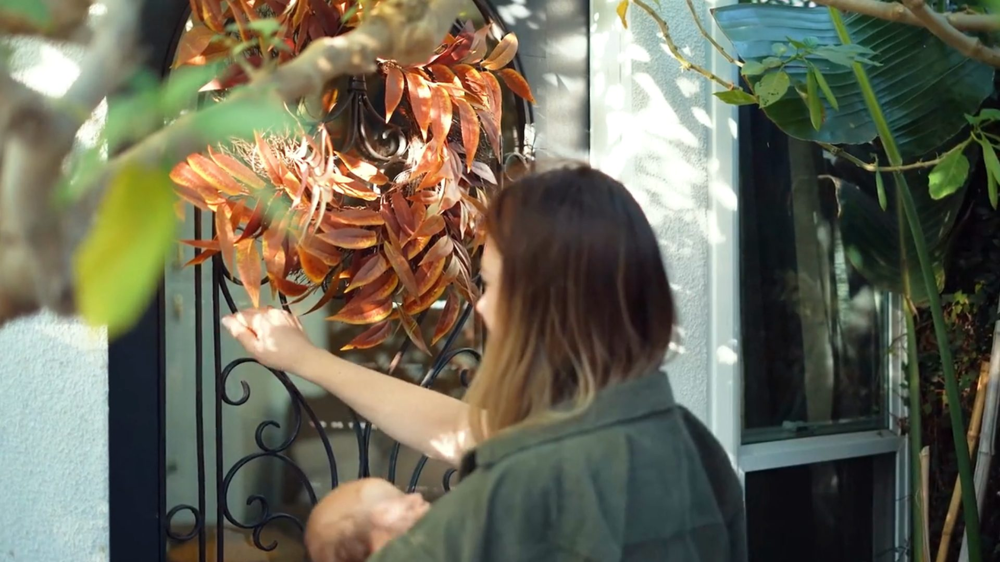
30broll11:29–11:5627.3s
The second booking takes the gold path
Voiceover
Now return to the guest from the opening. The first stay may have arrived through an OTA. After checkout, the property earns permission, remembers the experience, and offers a relevant reason to return. The second booking follows the direct path. The win is not eliminating the platform that introduced the guest. It is no longer paying to meet the same guest from scratch every time.
Visual job
earns permission · The second booking · from scratch every time
hotel host welcoming returning guests with room key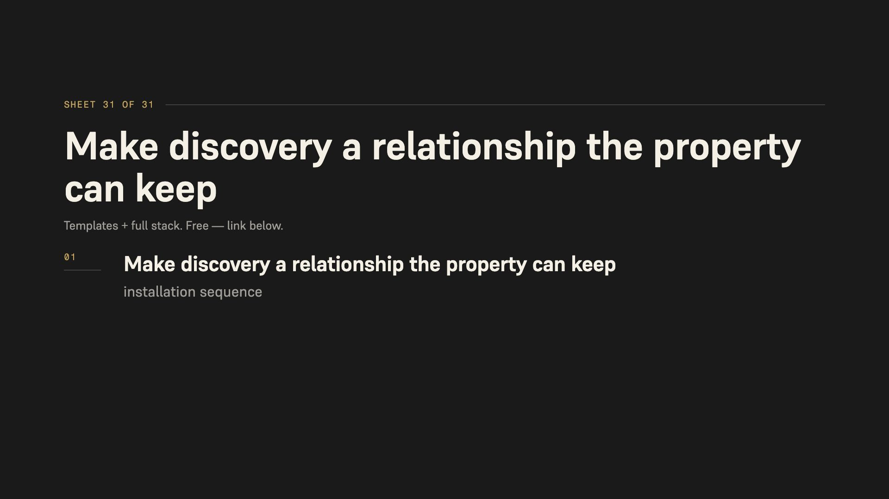
31cta11:56–12:2529.3s
Make discovery a relationship the property can keep
Voiceover
The direct-booking recovery blueprint includes the audit, the installation sequence, and the monthly scorecard. OTAs can keep doing what they do best: discovery at global scale. The operator's job is to make sure that discovery becomes a relationship the property can keep. Next, watch the missed-call system that repairs one of the most expensive breaks in that path.
Visual job
installation sequence · a relationship · missed-call system